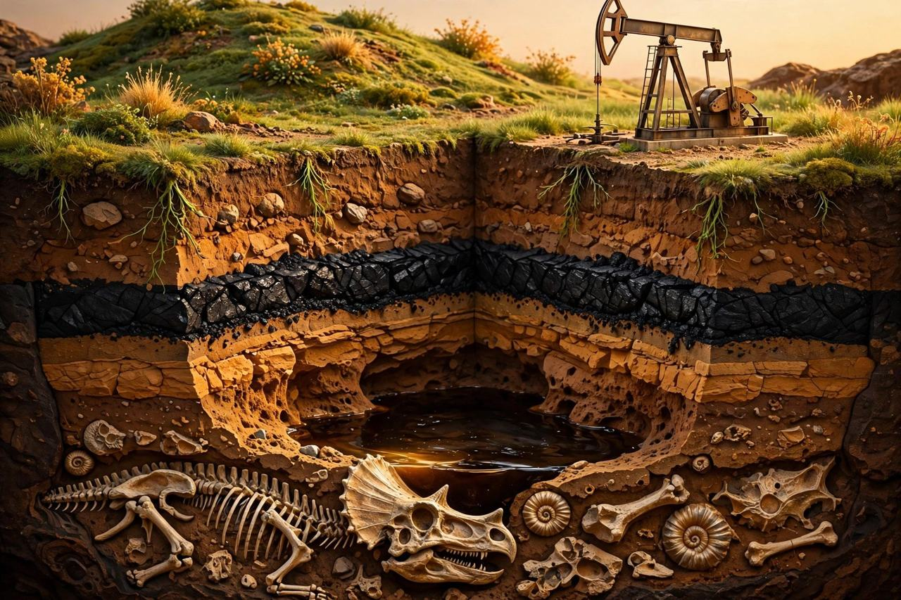

Unit 5 · Global Warming — Lesson 1: Getting Started · Grade 11 · Extra Class (B1–B2)
Use a V-ing clause for an action that happens at the same time as, or just before, the main action. The subject of both actions must be the SAME.
• Walking into the science room, Linh saw a big chart on the wall. (= When she walked in…)
• Seeing the dry garden, Nam felt sad.
A V-ing clause at the beginning of a sentence can give the reason for the main action.
• Being worried about the planet, the students joined the campaign. (= Because they were worried…)
• Knowing the danger, we must act now.
🌊 Showing RESULT — put the V-ing clause AFTER the main clause:
• The ice is melting fast, causing the sea level to rise. (= …and this causes…)
• People burn more coal, releasing more carbon dioxide into the atmosphere.
⚠️ If the subject is the RECEIVER of the action, use the past participle (V3): Located near the sea, the town often suffers from floods. · Built in 2020, the solar farm produces clean energy.
On a bright Saturday morning, Green Star High School started its Green Earth Campaign, and Linh and Nam joined it with their classmates. Walking into the science room, Linh saw a big chart showing the Earth's rising temperature. Their teacher explained that burning fossil fuels like coal releases carbon dioxide into the atmosphere. Pointing at a poster, Linh added: “Carbon dioxide and other greenhouse gases trap heat in the atmosphere, causing global warming.”
Later, the class walked through the school garden. The ground was dry and cracked because a long heatwave and drought had killed many young trees. The teacher then showed photos of forests being cut down and of flooded streets in a coastal town. “Deforestation makes the problem worse,” she said. “Warming the planet, the sun melts the ice at the poles, raising the sea level and causing floods in low coastal areas.”
In the afternoon, the students planted new trees in the garden and helped put solar panels on the library roof. “Using renewable energy helps us cut our carbon footprint,” Nam said happily. Linh then presented the class plan: save electricity, cycle to school and plant one hundred trees this school year. At sunset, everyone took a group photo under the big campaign banner. Smiling at the camera, Nam said: “Protecting our planet starts with us.”
PART 1 — Complete the form: A TALK — OUR WARMING PLANET
PART 2 — True or False?

Useful language: The main cause of… is… · Burning… releases… into the atmosphere. · …, trapping heat around the Earth. · Cutting down forests means… · As a result, … · …, causing the temperature to rise. · In my opinion, the most serious cause is… because…
A: Today I will present the causes of global warming. The main cause is burning fossil fuels like coal and oil. Burning these fuels releases carbon dioxide into the atmosphere, trapping heat around the Earth. Another cause is deforestation. Cutting down forests removes the trees that clean our air. As a result, the temperature keeps rising, causing ice to melt and sea levels to go up.
B: Which cause do you think is the most serious?
A: In my opinion, burning fossil fuels is the most serious cause because it produces the most emissions.
Sentence starters: Global warming is mainly caused by… · Firstly, burning… releases… · These gases…, trapping… · Secondly, deforestation… · Cutting down trees means… · As a result, …
Useful language: fossil fuels · carbon dioxide · greenhouse gases · atmosphere · emissions · trap heat · deforestation · consequence · temperature · melt
Global warming is mainly caused by human activities. Firstly, burning fossil fuels like coal and oil releases huge amounts of carbon dioxide into the atmosphere. These greenhouse gases stay in the air for a long time, trapping heat around the Earth. Secondly, deforestation makes the problem worse. Cutting down forests removes the trees that absorb carbon dioxide, leaving more gas in the atmosphere. Factories and cars also produce harmful emissions every day. As a result, the Earth's temperature keeps rising, melting the polar ice and causing floods and droughts in many places.
Take a photo/screenshot of your report card and send it to your teacher!
| Part | Score |
|---|---|
| Warmer game (Unit 4) | – |
| Vocabulary — Matching | – |
| Vocabulary — Gap-fill | – |
| Grammar check | – |
| Video check — Order the events | – |
| Video check — True / False | – |
| Reading | – |
| Listening — Form completion | – |
| Listening — True / False | – |
| Homework A — Vocabulary | – |
| Homework B — Participle Clauses | – |
| Homework C — The story | – |